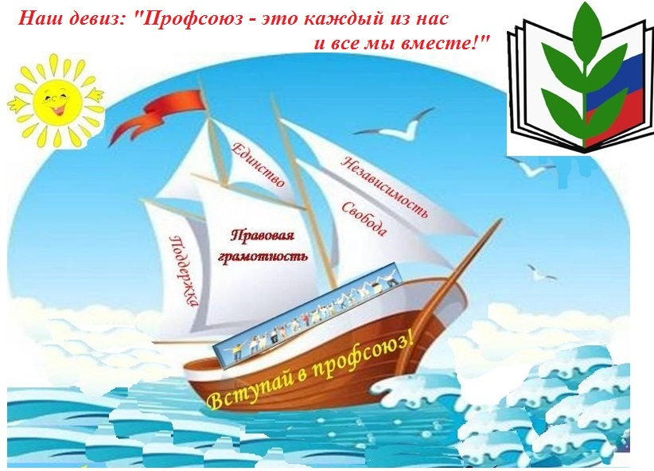

Профсоюз организации
 Работа профсоюзной организации школы №8
В 1975 год – городу Нижневартовску всего 3 года, город только становится на ноги, строятся новые микрорайоны: 3-й, 4-й, 5-й, открываются новые школы.
В 1975 году открывается сразу 2 школы : № 8 и № 9.
Первым председателем местного комитета избрана Левина Вера Ивановна, человек ответственный , инициативный, творческий.
В течение многих лет председателями местного, профсоюзного комитетов работали: Елбаева Валентина Владимировна
Из истории становления профсоюза в школе №8
Цель профсоюза: защита профессиональных, трудовых, социально-экономических прав и интересов работников, их здоровья, занятости и социального статуса.
Задачи профсоюза:
- Совершенствовать и поднимать уровень развития и укрепления социального партнерства между администрацией и профкомом;
- Совершенствовать локальную нормативно-правовую базу деятельности первичной профсоюзной организации;
- Внедрять в практику работы профкома новые информационные технологии;
- Содействовать охране здоровья, создавать благоприятные условия труда и отдыха работников учреждения;
- Совершенствовать формы и методы спортивной и культурно-массовой работы с членами профсоюза.